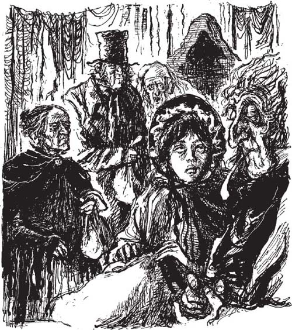
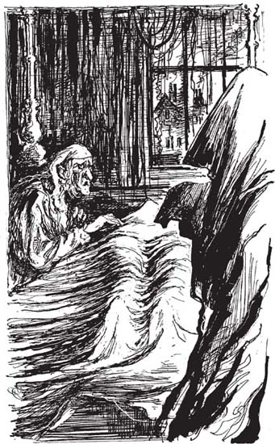

Chương 12
Listen to Part 1:

Hồn ma Giáng sinh chưa tới
Hồn ma thứ ba chậm rãi và lặng lẽ tiến đến gần Scrooge. Hồn ma mặc một chiếc áo choàng đen dài che kín cơ thể và khuôn mặt. Hồn ma chỉ thẳng vào Scrooge. Nó không nói chuyện với ông ta.
Scrooge đã từng hơi sợ hai hồn ma đầu tiên. Nhưng Hồn ma Giáng sinh Quá khứ và Hồn ma Giáng sinh Hiện tại đều rất thân thiện. Chúng đã trò chuyện với ông ta. Nhưng giờ đây, Scrooge rất sợ. Ông ta quỳ xuống trước mặt hồn ma.
‘Ngài có phải là Hồn ma Giáng sinh Chưa tới không?’ Scrooge hỏi.
Hồn ma đáng sợ đó không trả lời. Giờ thì tay của nó chỉ về hướng sau Scrooge. Hồn ma đang chỉ cho Scrooge nơi họ sẽ đến.
‘Hồn ma tương lai, tôi sợ ngài lắm,’ Scrooge nói. ‘Tôi muốn trở thành một người tốt hơn. Tôi sẽ đi cùng ngài. Cảm ơn ngài đã đến giúp tôi. Nhưng xin hãy nói chuyện với tôi.’
Bàn tay của hồn ma vẫn tiếp tục chỉ về phía sau Scrooge. Hồn ma không nói gì cả.
Sợ hãi vô cùng, Scrooge đứng dậy. Ông ta nắm lấy áo choàng đen của hồn ma. Ngay lập tức, họ đã đến một nơi khác ở London.
Ở khắp mọi nơi đều có đàn ông. Họ bước đi rất nhanh. Họ vừa đi vừa nói chuyện và nhìn đồng hồ. Họ mang theo những cuốn sổ kế toán giống như sổ kế toán của Scrooge.
Scrooge biết mình đang ở đâu. Ông ta đang ở Sở giao dịch chứng khoán. Đây là nơi những thương nhân đến để trò chuyện. Họ đến đây để mua và bán đồ. Đây là nơi Scrooge đến để làm việc hàng ngày.
Listen to Part 2:
Hồn ma dừng lại bên cạnh một nhóm đàn ông. Scrooge nhận ra họ. Hồn ma chỉ vào họ. Hồn ma đang bảo Scrooge lắng nghe cuộc trò chuyện của họ.
Scrooge biết những người đàn ông đó không thể nhìn thấy ông ta. Vì vậy, ông ta đứng gần họ và lắng nghe.
‘Ông ấy chết khi nào?’ một người đàn ông hỏi.
‘Đêm qua,’ một người đàn ông khác trả lời.
‘Ai sẽ đi dự đám tang của ông ấy?’ người đàn ông thứ ba hỏi.
‘Tôi không biết. Liệu có ai đi dự đám tang của ông ấy không?’ người đàn ông thứ hai trả lời. ‘Ông ấy không có bạn bè nào.’
Scrooge nhìn hồn ma. ‘Họ đang nói về ai vậy?’ ông ta hỏi.
Hồn ma không trả lời. Nó chỉ vào thêm hai người đàn ông nữa. Scrooge cũng biết những người đàn ông này. Họ là những thương nhân rất quan trọng.
‘Tôi đã nghe nói rằng ông ấy đã chết,’ một người trong số họ nói.
‘Đúng vậy, ông ấy đã chết,’ người kia trả lời. ‘Hôm nay lạnh quá, phải không?’
Listen to Part 3:
Scrooge rất ngạc nhiên. Có người đã chết. Không ai quan tâm đến người đã chết đó. Những người này đang nói về ai vậy? Tại sao hồn ma lại bảo ông ta lắng nghe cuộc trò chuyện của họ?
Sau đó, hồn ma tiếp tục đi. Họ nhanh chóng đến một nơi khác ở London. Đây là một khu phố cũ, bẩn thỉu nơi những người nghèo sinh sống. Hồn ma đưa Scrooge vào một cửa hàng nhỏ bẩn thỉu. Bên trong cửa hàng có những chiếc nồi nấu ăn cũ, đồ đạc hỏng và những đống quần áo rách rưới, bẩn thỉu. Một ông già tóc bạc ngồi ở góc phòng, đang hút tẩu thuốc.
Một người phụ nữ bước vào cửa hàng, tay xách một bó vải lớn. Một người phụ nữ lớn tuổi hơn bước vào, tay xách một bó vải nhỏ hơn. Sau đó, một người đàn ông mặc bộ đồ đen bước vào. Họ đều ngạc nhiên khi nhìn thấy nhau.
Ông Joe già, chủ cửa hàng, khóa cửa lại. Ông ta dẫn những vị khách của mình vào một căn phòng phía sau cửa hàng.
Những người phụ nữ đặt những bó vải của mình xuống. ‘Lấy một ít đồ của người chết thì có gì là sai trái chứ,’ người phụ nữ lớn tuổi hơn nói.
‘Đúng vậy. Bây giờ ông ấy đã chết. Ông ấy không cần đến chúng nữa,’ người phụ nữ kia nói. ‘Chúng ta phải tự lo cho bản thân mình.’
Ba vị khách đều có những thứ để bán cho ông Joe già. Người đàn ông mặc bộ đồ đen không có nhiều đồ lắm. Ông ta lấy một chiếc đồng hồ và một vài chiếc cúc bạc từ trong túi ra.

Người phụ nữ lớn tuổi hơn có một ít quần áo và một số ga giường trong bó vải của mình. Ông Joe già không trả nhiều tiền cho họ.
Nhưng người phụ nữ với bó vải lớn đã ăn cắp rèm cửa xung quanh giường của một người đàn ông đã chết. Cô ta cũng ăn cắp chăn lông cừu trên giường của ông ta. Và cô ta đã lấy quần áo của người đàn ông đã chết.
Listen to Part 4:
‘Ông ấy không có bạn bè,’ người phụ nữ nói. ‘Không có người thân nào đến nhà ông ấy khi ông ấy mất. Vì vậy, chúng tôi đã lấy những thứ chúng tôi muốn.’
Scrooge kinh hoàng lắng nghe cuộc trò chuyện của họ. ‘Tôi hiểu tại sao ngài đưa tôi đến đây,’ ông ta nói với hồn ma. ‘Tôi phải học cách quan tâm đến mọi người. Mọi người sẽ lấy trộm đồ của tôi khi tôi chết nếu tôi không học cách quan tâm.’
Cửa hàng biến mất. Bây giờ, Scrooge đang ở trong một căn phòng tối lạnh. Có một chiếc giường không có rèm xung quanh. Trên giường có thứ gì đó được phủ bằng một tấm vải mỏng. Scrooge sợ hãi. Ông ta biết rằng có một xác chết dưới tấm vải. Đây là xác của người đàn ông không có bạn bè.
Hồn ma chỉ vào xác chết dưới tấm vải. ‘Không, tôi không thể,’ Scrooge nói. ‘Tôi không thể nhấc tấm vải lên được. Tôi không thể nhìn ông ấy. Tôi hiểu tại sao ngài lại chỉ người đàn ông này cho tôi. Xin hãy cho chúng ta rời khỏi nơi này ngay bây giờ!’
Hồn ma không nhúc nhích. ‘Xin hãy chỉ cho tôi ai đó quan tâm đến cái chết của người đàn ông này. Xin hãy làm như vậy!’ Hồn ma giơ cao hai cánh tay lên. Chiếc áo choàng đen dài buông xuống đất trước mặt Scrooge. Khi hồn ma hạ cánh tay xuống, Scrooge nhìn thấy một căn phòng phía sau nó.
Có một người phụ nữ trẻ cùng hai đứa con trong phòng. Cô ấy lo lắng và đang đi vòng quanh căn phòng.

‘Không, tôi không thể,’ Scrooge nói. ‘Tôi không thể nhấc tấm vải lên được.’
Cánh cửa mở ra và chồng của người phụ nữ bước vào.
‘Có tin tức gì không?’ người phụ nữ nhanh chóng hỏi. ‘Có tin tốt hay tin xấu?’
Listen to Part 5:
‘Có tin tốt cho chúng ta,’ người đàn ông trẻ trả lời. ‘Anh đã đến nhà của người đàn ông già. Anh định nói với ông ấy rằng chúng ta không thể trả tiền cho ông ấy được. Anh đến đó để nói rằng chúng ta sẽ trả tiền vào tuần tới. Nhưng ông ấy đã chết, Caroline ạ. Người đàn ông già đã chết rồi.’
‘Mừng vì người ta chết thật là sai trái,’ người phụ nữ nói. ‘Nhưng tôi vẫn vui.’
‘Bây giờ chúng ta phải trả tiền cho ai đây?’ cô ấy tiếp tục.
‘Anh không biết,’ chồng cô ấy trả lời. ‘Nhưng chắc chắn là có người sẽ tử tế với chúng ta hơn người đàn ông già đó. Anh cũng vui nữa.’
Scrooge kinh hoàng. Người đàn ông và người phụ nữ này quan tâm đến người khác. Nhưng họ vui mừng vì người đàn ông kia đã chết!
‘Hồn ma Giáng sinh Chưa tới,’ ông ta nói, ‘xin hãy đưa tôi đến một nơi khác. Hãy chỉ cho tôi một người khác đã chết. Nhưng hãy chỉ cho tôi những người buồn vì cái chết đó.’
Mục lục
- Trang tiêu đề
- Mục lục
- Ghi chú về tác giả
- Ghi chú về cuộc sống ở Anh vào thế kỷ 19
- 1 Ebenezer Scrooge
- 2 Những vị khách đến thăm Scrooge
- 3 Bóng ma của Marley
- 4 Tin tức cho Scrooge
- 5 Bóng ma của lễ Giáng sinh quá khứ
- 6 Scrooge hồi bé
- 7 Lễ Giáng sinh cùng nhà Fezziwig
- 8 Cô gái yêu Scrooge
- 9 Bóng ma của lễ Giáng sinh hiện tại
- 10 Lễ Giáng sinh cùng nhà Cratchit
- 11 Lễ Giáng sinh vui vẻ khắp nơi
- 12 Bóng ma của lễ Giáng sinh tương lai
- 13 Tiny Tim
- 14 Một con người đã thay đổi
- Những điểm cần nắm
- Trang bản quyền